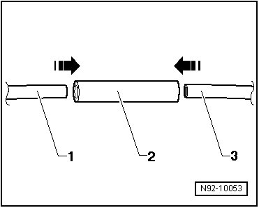
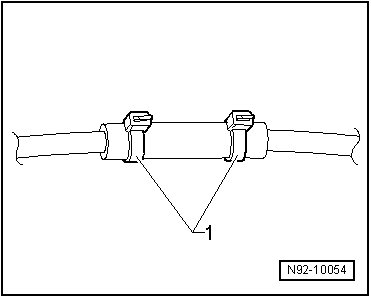

Smooth Hoses, Repairing
Smooth Hoses, Repairing

Smooth hoses with a diameter of 5 x 1 mm or 6 x 1 mm can be repaired with a EPDM repair hose section.
- Trim and remove damaged sections of hose.
- Select the corresponding EPDM hose - 2 - and cable ties
- Cut a length of EPDM hose - 2 - so that the smooth tube ends - 1 - and - 3 - can be pushed at least 10 mm into the EPDM hose - 2 -.
- Secure with cable ties as illustrated - 1 -.
